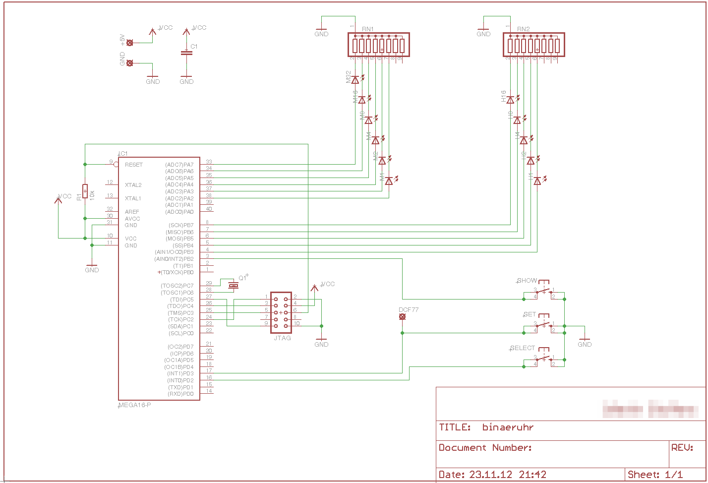
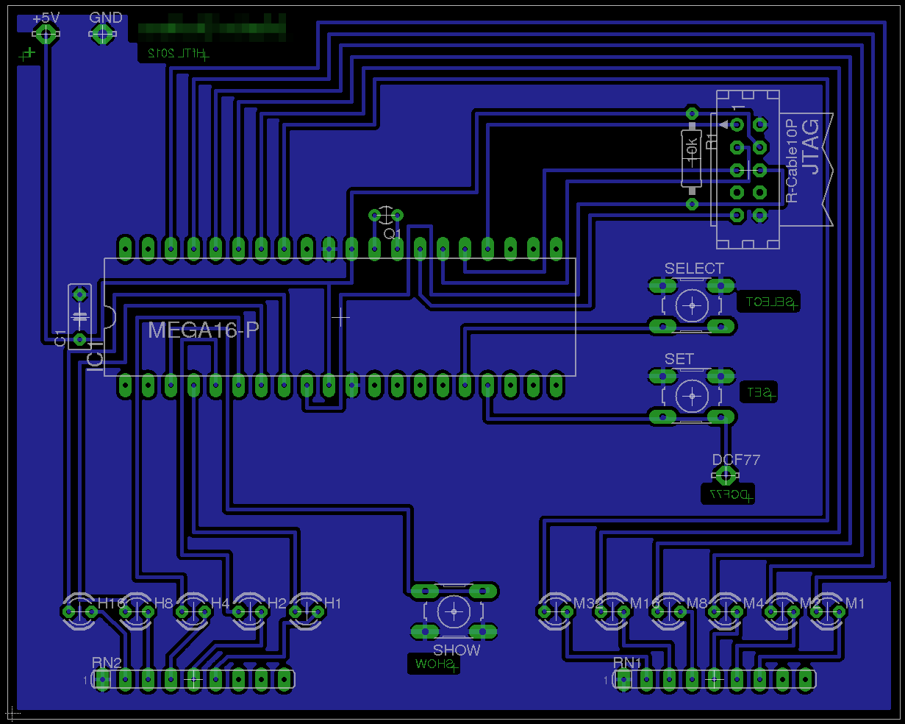
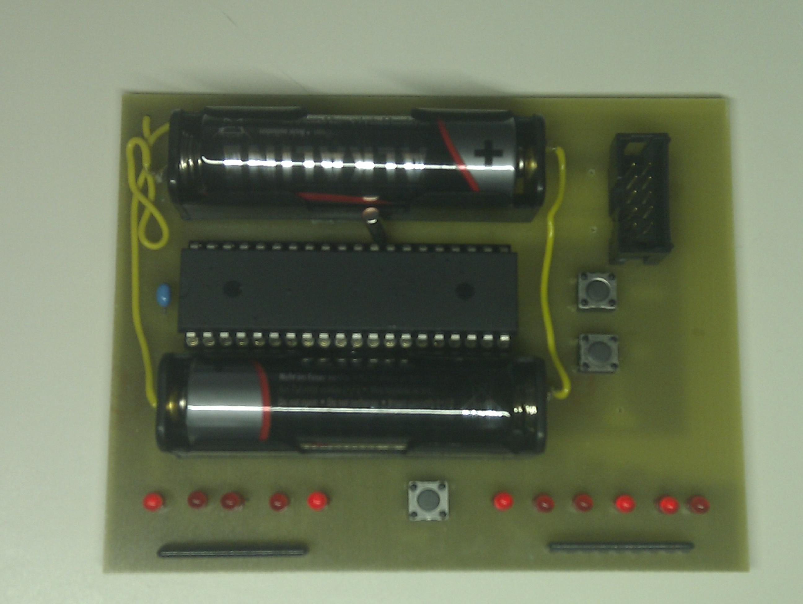

Binär-Uhr mit AVR µC
By Martin Stoffers
Dieses Semester mussten wir in Rechnerarchitektur als ein Bestandteil der üblichen Prüfungsvorleistungen eine Binäruhr (optional mit DCF77) selbständig entwerfen, aufbauen und programmieren. Gedacht ist das ganze natürlich um den Studenten wenigstens einmal vor Augen zu führen, auf wie viele kleine Dinge man achten muss, wenn man Hardware von Grund auf neu entwirft. Da genau das, schon vor ein paar Jahren der Schwerpunkt meiner Ausbildung war, musste ich mich in die meisten Dinge nicht allzu lange einarbeiten. Aber es gab auch Unterschiede. Beispielsweise wurde der verwendete AVR wie allgemein üblich in C programmiert. Ganz im Gegensatz zu dem Controller den wir in der Ausbildung verwendet hatten. Damals hatten wir auch eine Uhr gebaut. Allerdings als Bahnhofsuhr mit LED-Matrix-Display, Temperatur und DCF77. Leider gibt es keine Bilder mehr von der Uhr (Digitalkameras waren Mangelware), aber wer mal sehen möchte wie man DCF77, möglichst ineffektiv, mit Hilfe von Assembler dekodiert, der kann ja mal den alten Quellcode auf Github.com ausspähen.
Genug Prosa… Was habe ich nun fabriziert.
Schritt 1: Erstelle einen Schaltplan.

Schritt 2: Layout der Platine erstellen, damit die Platine entsprechend geätzt werden kann.

Schritt 3: Das Ding ätzen und zusammen löten.

Schritt 4: Die Software entwerfen und auf den Flash schreiben.
Bis auf den letzten Schritt war mir das Prinzip schon bekannt. Deshalb habe ich mir auch nicht übermäßig Mühe gegeben (Schande über mich), sondern einfach schnell fertig gemacht, um mich mit dem zu beschäftigen, was für mich interessanter war. Die Programmierung in C. Leider habe ich die Implementierung des DCF77-Zeitsignals zeitlich nicht mehr hinbekommen. Andere Fächer fand ich einfach wichtiger. Ein Mitstudent hat allerdings etwas mehr Zeit investiert und hat eine leicht erweiterte Variante gebaut.
Kurz zur Funktion meiner Binäruhr. Der Taster zwischen den LEDs dient dazu die Uhr schlafen zu legen. Das heißt, der Prozessor wird nur noch durch eben diese Taste und den Uhrenquarz (Der kleine Zylinder zwischen der oberen Batterie und dem Controller) geweckt. Die Anzeigen und anderen Taster sind in diesem Modus abgeschaltet. Der untere Taster rechts von Controller dient dazu die Uhrzeit zu stellen. Mit dem oberen Taster kann man zwischen den Modi umschalten.
- Modus 1: Minuten stellen
- Modus 2: Stunden stellen
- Modus 3: Betrieb (Nur hier kann man den Controller schlafen legen)
Die Software
#define F_CPU 1000000
#include <stdint.h>
#include <util/delay.h>
#include <avr/io.h>
#include <avr/interrupt.h>
#include <avr/sleep.h>
volatile uint8_t h=0;
volatile uint8_t m=0;
volatile uint8_t s=0;
volatile uint8_t pset = 0;
volatile uint8_t pshow = 0;
volatile uint8_t pselect = 0;
volatile uint8_t timer1overflow=0;
volatile uint8_t selectcounter=0;
volatile uint8_t penne=0;
//DCF variables
//volatile unsigned int tmpCnt = 0;
//volatile int ovfCnt = 0;
//volatile unsigned int dcfArray[36];
//volatile uint8_t hDcf, mDcf;
//Prototypen
void entprell(void);
ISR(TIMER2_OVF_vect);
ISR(TIMER1_OVF_vect);
ISR(INT0_vect);
ISR(INT1_vect);
ISR(INT2_vect);
int main(void){
//++++++++++++++++++ INIT +++++++++++++++++++++
//Ausgaenge - Eingaenge
DDRD=0b00000000;
DDRA=0xFF;
DDRB=0b11111011;
//Pull-Ups
PORTD=0b00001100;
PORTB=0b00000100;
//Timer u. Inter 0
GICR |= (1<<INT0) | (1<<INT1) | (1<<INT2);
//MCUCSR|= (1<<ISC2);
MCUCR |= (1<<ISC01) | (1<<ISC11);
TCCR2 |= (1<<CS20) | (1<<CS22);
TIMSK |= (1<<TOIE2);
ASSR |= (1<<AS2);
//Flanken für INT1 (DCF)
MCUCR |= (1 << ISC10);
MCUCR &= ~(1 << ISC11);
TCCR1B |= (1<<CS11);
TIMSK |= (1<<TOIE1);
TCNT1 = 0x00;
sei();
volatile uint8_t initmuster = 0xFF;
set_sleep_mode(SLEEP_MODE_IDLE);
//++++++++++++++++++ ANNNNDDDD GOOOOO +++++++++++++++++++++
while (1)
{
//Entprellung der Tasten
entprell();
//initmode blinken
if(selectcounter < 1){
initmuster ^= 0xFF;
PORTA=(initmuster<<2) | (PORTA&0x02);
PORTB=(initmuster<<3) | (PORTB&0x07);
_delay_ms(500);
}
else if(selectcounter > 0 && penne != 1){
//Ausgabe Stunden und Minuten
PORTA=(m<<2) | (PORTA&0x02);//min
PORTB=(h<<3) | (PORTB&0x07);//hour
}
else if(selectcounter > 2 && penne == 1){
PORTA=(0x00<<2) | (PORTA&0x02);
PORTB=(0x00<<3) | (PORTB&0x07);
sleep_mode();
}
}
}
//Timer1 overflow
ISR(TIMER1_OVF_vect){
if(timer1overflow <= 6){
timer1overflow++;
}
else if(timer1overflow > 6){
TIMSK &= ~(1<<TOIE1);
TCNT1 = 0x00;
selectcounter=3;
}
}
//timer for DCF signal length
//ISR(TIMER0_OVF_vect){
// ovfCnt++;
//}
//Interrupt fuer select-Taste
ISR(INT0_vect){
if(pselect==0){
pselect = 3;
if(dcfRun == 1){
//disable dcf
}
//selectcounter erhoehen
if(selectcounter == 3){
s=0;
selectcounter = 1;
}
else if(selectcounter == 1 || selectcounter == 2){
selectcounter++;
}
else if(selectcounter == 0){
PORTA=(0x00<<2) | (PORTA&0x02);
PORTB=(0x00<<3) | (PORTB&0x07);
//Enable DCF
selectcounter = 1;
}
}
}
//Interrupt fuer pset-Taste und DCF
ISR(INT1_vect){
if(pset == 0){
pset = 3;
//zeit stellen
if(selectcounter == 1){
m++;
if (m==60){
m=0;
}
}
if(selectcounter == 2){
h++;
if (h==24){
h=0;
}
}
}
}
//Interrupt fuer pshow-Taste
ISR(INT2_vect){
if(pshow == 0){
pshow = 3;
if(penne == 1){
penne = 0;
}
else{
penne = 1;
}
}
}
//Entprellung der Tasten
void entprell(void){
_delay_ms(10);
if(pset){
pset--;
}
if(pshow){
pshow--;
}
if(pselect){
pselect--;
}
}
//Zeit-Rechunung
ISR(TIMER2_OVF_vect){
if(selectcounter == 3){
s++;
if (s==60){
m++;
s=0;
}
if (m==60){
h++;
m=0;
}
if (h==24){
h=0;
}
}
}